Twelve (Street Fighter)
Twelve (Street Fighter)
Unorthodox characters are as the name suggests, unorthodox. From their tools, their look, and they way they move, unorthodox characters have something about them that is different from every other character in the game. They may have attacks or specials that deter from the rules previously set by the game. Even the way their attacks come out can be odd, which makes them very unpredictable.
Toolkit
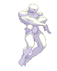
 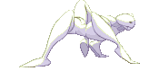
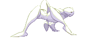
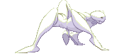
- Unconventional attacks or specials
- RNG-based move
- A gimmick
- Different stances
- A charging meter
Pros
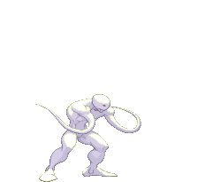
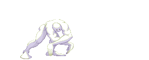
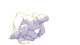
- Unpredictable
- Match-up experience advantage
- Frustrating to fight
Cons
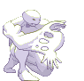- Gimmicky tools risks losing your advantage
- Harder to understand
- Lack of fundamental tools
How should I play as this fighter?
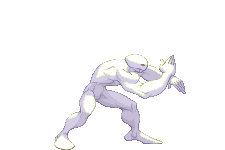
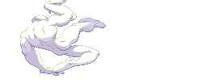
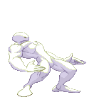
Learn about your gimmick or what makes your fighter different. Try to understand where and when these tools can be applied in different situations to give yourself the advantage.
How can I beat this fighter?
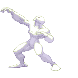 Observe patterns they might follow when executing their moves and react accordingly. Learn about their gimmick to find unique workarounds, perhaps even finding a way to stop them from using their gimmick.Examples:
- Twelve (Street Fighter III: 3rd Strike, 1999)
- Mr. Game & Watch (Super Smash Bros. Melee, 2001)
- Yoshimitsu (Tekken, 1994)
Evelynn's Notes
Difficulty: ★ ★ ★ ☆ ☆Certain unorthodox characters may have moves or special gimmicks that allow for easier gameplay since they can be the only one who doesn’t follow the rules. However, other unorthodox characters may be very difficult for beginners to handle. Because they have unconventional move sets, the logic behind how you play other characters may not apply to this fighter, and their odd movement makes it hard to set up combos.